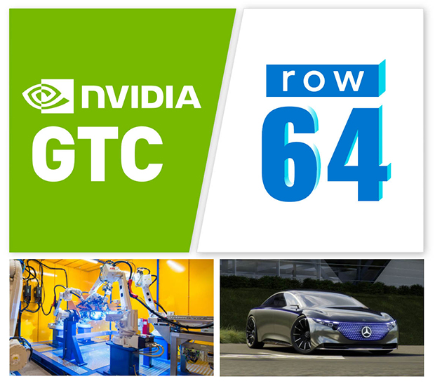
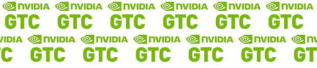

Row64 At GTC 21

[UPDATE] - Added after GTC ended. Here’s the Row64 “The Data Decision Loop” GTC presentation:
Join Row64, LunarG and Imaginary Spaces at NVIDIA GTC
Dear Friends of Row64,
Join Row64 at NVIDIA’s GTC for a transformative global event that brings together brilliant, creative minds looking to ignite ideas, build new skills, and forge new connections to take on our biggest challenges. It all comes together online April 12 - 16, kicking off with CEO and Founder Jensen Huang’s keynote.
Row64 would like to personally invite you to attend Row64’s “The Data Decision Loop” session at GTC to discover new research in GPU data science & raytracing and to network with a global community of developers, researchers, engineers, and innovators.
We will also show cutting edge new R&D done in collaboration with LunarG and Imaginary Spaces.
At GTC you can explore:
- Inspiring presentations from industry pioneers
- Startup insights
- DLI Training
- Demos
Registration is free and gives you access to all the live sessions, interactive panels, demos, research posters, and more. You can also add a Deep Learning Institute (DLI) full-day workshop to your GTC conference pass for just $249 each. NVIDIA’s DLI offers hands-on training in AI, accelerated computing, and data science to help developers, data scientists, and other professionals solve their most challenging problems.
Don’t miss out on this amazing event. Register at www.nvidia.com/gtc and be the first to know what’s happening in the world of AI.
To register for “The Data Decision Loop” seminar:
- Go to www.nvidia.com/gtc and sign up.
- Click on this link: https://gtc21.event.nvidia.com/media/The%20Data%20Decision%20Loop%20%5BS31871%5D/1_bb7fzk7d
To join the talk with with live chat, please return to the link: at April 12th at 10AM PDT (make sure you are logged into participate).
Otherwise you can visit it anytime after that time to see the recorded version.
Cheers and hope to see you there,
The Row64 Team
